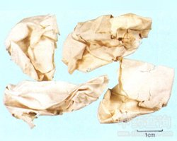

凤凰衣

拼音
Fènɡ Huánɡ Yī
别名
鸡卵中白皮（《别录》），鸡子白皮（孟诜《必效力》），凤凰退（《本草蒙筌》），鸡蛋膜衣（《现代实用中药》），鸡蛋衣（《浙江中药手册》）。
来源
雉科动物鸡Gallus gallus domosticus Brisson所产卵孵化小鸡后鸡蛋壳的内膜。
生境分布
生态环境：家鸡因饲养杂交的关系，口种繁多，形体大小及毛色不一。食物主要为植物的种子、果实及昆虫等。雄鸡善啼。 资源分布：全国各地均有饲养。
药材特点
家鸡，家禽。嘴短而坚，略呈圆锥状，上嘴稍弯曲。鼻孔裂状，被有鳞状瓣。眼有瞬膜。头上有肉冠，喉部两侧有肉垂，通常呈褐红色；肉冠以雄者为高大，雌者低小；肉垂亦以雄者为大。翼短；羽色雌、雄不同，雄者羽色较美，有长而鲜丽的尾羽；雌者尾羽甚短。足健壮，跗、跖及趾均被有鳞板；趾4，前3趾，后1趾，后趾短小，位略高，雄者跗跖部后方有距。
性状
干燥品多为皱褶的纸样薄膜，大小不等，呈浅黄色或黄白色，略有光泽，具棕色线样条纹。质轻易碎，微有腥臭气。
性味
甘，温。
功能主治
补肺止咳。用于慢性气管炎，久咳，盗汗。
用法用量
0.5～1钱，研粉服。
化学成分
主要成分为角蛋白(keratin)，其中夹有少量粘蛋白纤维(mucinfibers)。
药理作用
1：本品为高度胶原化的纤维结缔组织：是由致密的与表面平行的纤维组织组成，贴敷于清创良好的烧伤表面，因其薄而柔软，占位性强，抗原性弱，是一种良好的天然生物性敷料
2：本品能为创面提供一层新的保持膜和屏障：使创面暂时封闭，减少水分蒸发及污染和感染的机会，使自然愈合过程不受干扰，愈合后创面光滑平整，减少瘢痕形成
摘录
《全国中草药汇编》